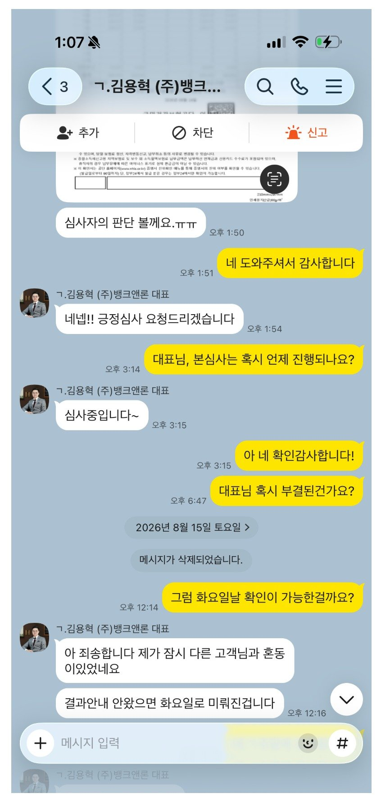

개인회생 면책 직후 대출 후기 (회생중에 받은채무의 통합 및 대환대출 성공)

저는 삼년전 개인회생을 인가받고 지난 7.31일 면책을 받았습니다. 면책을 받았으니 다 될줄 알았는데, 부채 삭제가 늦게 이루어져 아무대서도 승인을 해주지 않았습니다(모든 플렛폼 돌려봄)
그래서 혹시 도와줄 사람이 있나 하고 개인회생 대출을 키워드로 검색해보니, 뱅크앤론이 나왔고, 곧 바로 연락이 왔습니다.
사정 일일히 다 들어주시고, 맞춤 조건에 해당하는 것들로만 진행해주셨습니다.
그래도 계속 부결이 나던 도중 딱 하나가 가승인되어 서류를 뷰냈습니다. 여기서도 대표님은 서류 하나하나보시며 마이너스 될 요인들을 분석하며 최대한 도와주셨습니다.(캡쳐 참조)
덕분에 평소보다 낮은 금리로 돈을 마련할 수 있었고 대부업체를 떼어냈습니다!
그리고 여기서 멈추지 않고 추후에 일정까지 같이 짜주셨습니다.
너무너무 감사하고, 앞으로 신용관리 잘 하겠습니다.
감사합니다!